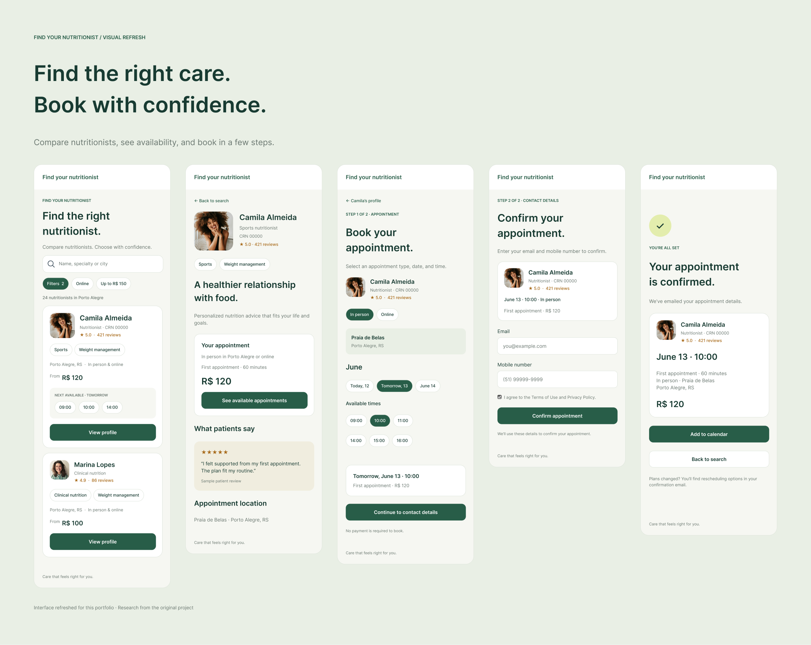
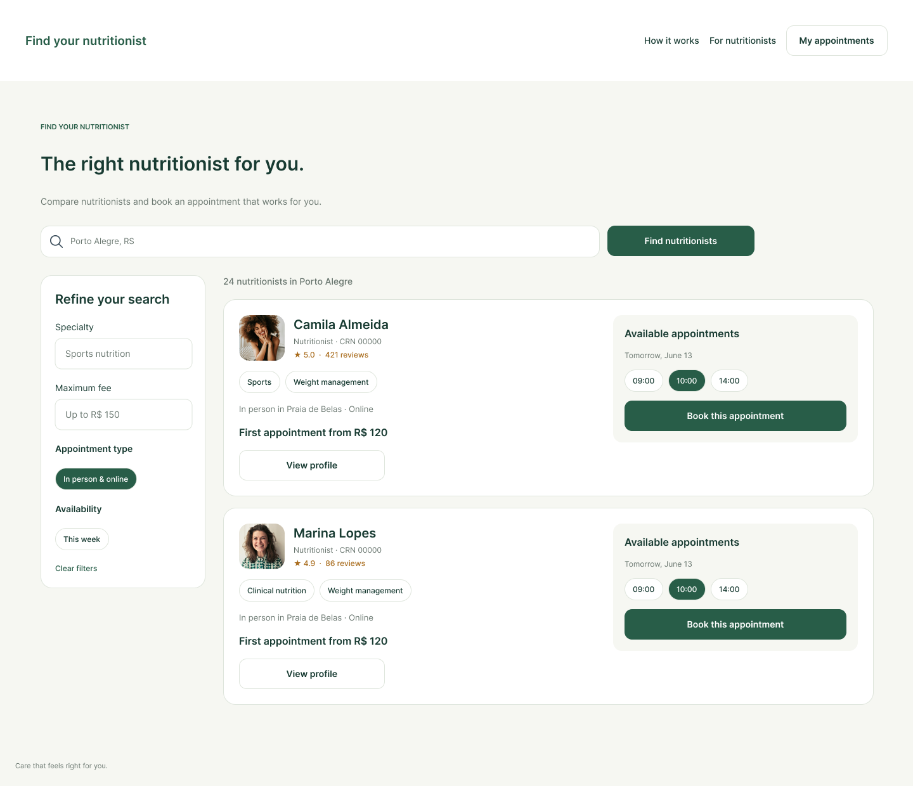
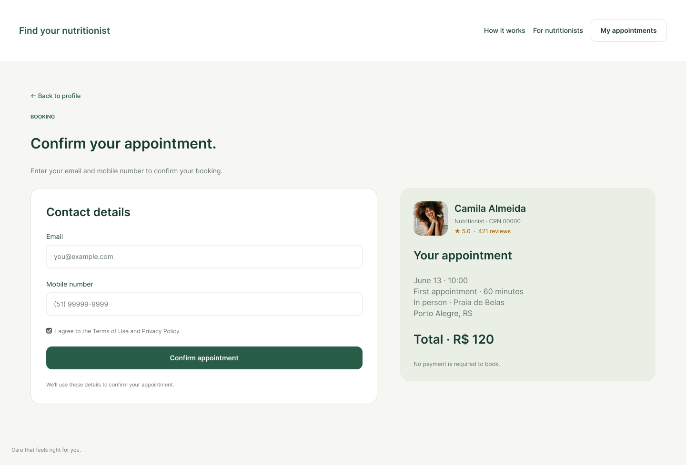
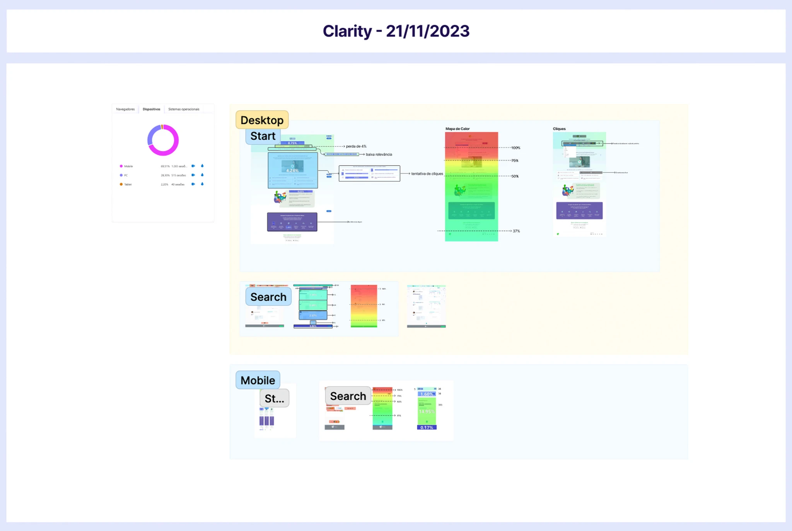

Breaking the
Conversion Block
A research-led redesign of a nutritionist search platform, helping patients find the right professional and book an appointment.

Interface refreshed for portfolio presentation. The research and findings below refer to the original project.
Overview
The nutritionist search site was designed to help professionals attract new patients. Despite thousands of daily visits, appointments booked through the site accounted for less than 4% of patients using the software.
I coordinated the research and design, working with the technical lead in weekly check-ins to understand the constraints of the legacy system.
Context
Why wasn’t traffic turning into appointments?
We asked nutritionists how many new patients they had received through “Find Nutritionists.” Most had received none, even though a profile was created when they signed up for the software. Yet the site consistently received many visits and various interactive clicks. We needed to understand where that interest was getting lost.
Discovery Methods
We combined a heuristic evaluation, a review of comparable search and booking flows, Clarity heatmaps and session recordings, and a survey of 285 people who had used nutrition services.
Together, these methods helped us understand where the experience broke down and what patients needed to choose a nutritionist.


The experience got in the way of booking.
Each product team member reviewed the site independently using Nielsen’s usability heuristics. We then compared our observations. Seven issues stood out.
Search started with a barrier.
The search field did not work as expected. Patients had to select a state before choosing a city, creating friction and frustrating clicks on the initial screen. Starting with location also made it harder to search by specialty or find online appointments.
The interface no longer matched the service.
The site had not been updated for many years, leaving outdated copy and layouts throughout the journey. Some elements looked like buttons but were only informational.
Patients were reading copy written for professionals.
Some texts were confusing and directed at nutritionists, including “over 6 million meal plans prescribed for your patients.” The language did not address the people trying to book care.
The site promised features that no longer existed.
Discontinued features were still listed as available. Patients could not rely on the information presented to them.
The value of the service was unclear.
The landing page made little connection between the advantages of using “Find Nutritionists” and the nutritional monitoring provided by the platform. It did not clearly explain how finding a professional would lead to ongoing care.
Patients could not search within their budget.
The filters did not cover key decision factors. There was no way to set a price range anywhere on the site.
A prominent action sent patients to the wrong place.
The “Try it for free” button led to the sales page aimed at nutritionists, taking potential patients away from their search.
Make comparison easier before asking people to book.
We reviewed healthcare search platforms alongside hotel booking sites, online stores, and on-demand services. We focused on how they organized filters and displayed availability alongside prices.
The design opportunity: bring specialty, price, reviews, and available appointments into the search experience, so patients have the information they need to compare professionals.
People were trying to move forward. The interface wasn’t helping.
I reviewed heatmaps and session recordings in Clarity. After 100 hours of observation, the data revealed a mobile-heavy audience and repeated obstacles in search.
of visits came from mobile.
Most people used their phones, yet the site had poorer usability and performance on mobile. This made a mobile-first redesign a priority.
engagement between state and city selection.
Engagement dropped between the two search steps. The location sequence added friction before patients could reach the results.
Clicks revealed an expectation to search.
People repeatedly clicked non-interactive headings about searching by specialty, name, or location and booking online. These clicks pointed to useful filters for the redesign.
Patients expected to enter a city directly.
Recordings showed people typing a city into the search field without selecting a state first. The required sequence did not match their expectations.
Opening filters rarely led to using them.
The filter control received frequent clicks, but the neighborhood and specialty options inside were rarely selected. Opening the panel did not translate into a more focused search.
The sales button created a tracking gap.
“Try it for free” attracted many clicks and sent visitors to the nutritionist sales page. From that point, Clarity could not show whether they returned to search or left entirely.

Audience Behavior Research
We surveyed 285 people who had received or were receiving nutrition care to understand how they chose a professional and what made follow-up difficult.
84%
relied on recommendations. When choosing a professional, respondents prioritized patient reviews, price, specialty, location, personal connection, and introductory videos, in that order.
62%
sought support for lifestyle changes. Other common reasons were dietary restrictions (59%) and appearance (58%). Respondents could select more than one answer.
52%
attended monthly follow-up appointments; 28% returned less often, and 9% did not return.
61%
cited cost as a barrier to follow-up, followed by lack of motivation (33%), limited time (29%), and unsatisfactory results (22%).
UX Strategy
We used familiar search and booking patterns, drawing on Jakob’s Law: people bring expectations from the sites and apps they already use. The aim was to make the next step clear without asking patients to learn a new process.
The research shaped three priorities: make search work on mobile, show the information patients need to compare professionals, and provide a clear path from a profile to an appointment.
Typography
We chose Inter for readability across screen sizes, using size and weight to distinguish names, appointment details, and supporting information.
Colors
We kept the palette consistent with the brand and used color to distinguish primary actions and selected options.
Layout Grid
A flexible grid supported the mobile-first layout and adapted the same content for desktop. Search results, filters, and booking details followed a consistent hierarchy across devices.
Conclusion
The research showed a gap between strong interest in the service and the effort required to book. With more than 70% of visits coming from mobile, we prioritized a mobile-first journey, clearer patient-facing language, and more useful search information.
The redesigned flow brings reviews, prices, and availability into the decision-making process, then guides patients through appointment selection and a shorter contact form.